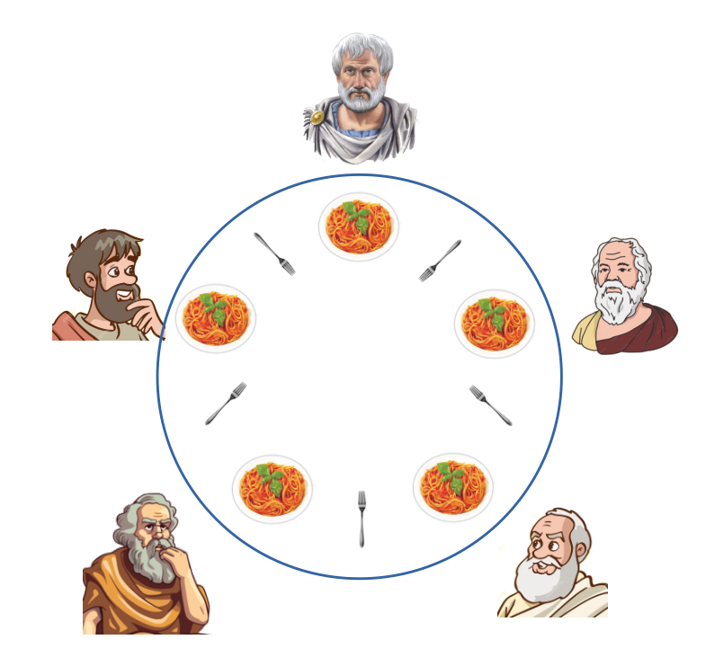

Informatica
Informatica è sempre stata una materia interessante ma con il passare degli anni ho capito che forse non era proprio la scelta migliore...
Scopri il programmaUn resoconto ragionato delle discipline affrontate nel corso del quinto anno dell'indirizzo Informatica e Telecomunicazioni, suddivise per area di competenza.
Informatica è sempre stata una materia interessante ma con il passare degli anni ho capito che forse non era proprio la scelta migliore...
Scopri il programmaSistemi è stata sempre una materia che mi è stata sempre a cuore. Mi è sempre piaciuto capire come funzionano i sistemi...
Scopri il programma
TPSIT è stata una materia complessa da inquadrare a pieno. La concorrenza dei Thread in Java e lo sviluppo Android...
Scopri il programma
GPOI si è distinta fin da subito dalle altre materie tecniche per l'organizzazione e la progettazione aziendale dei progetti...
Scopri il programma
La matematica è sempre stata una della mie materie preferite, in particolare l'affascinante risoluzione dei calcoli integrali...
Scopri il programmaUna materia intrigante che ha avuto il suo picco d'interesse nello studio delle reti neurali convoluzionali per immagini...
Scopri il programma
L'Italiano mi ha permesso di esplorare la lingua, la letteratura e la cultura, scoprendo in particolare la forza dei poeti maledetti...
Scopri il programmaLa materia Storia mi ha permesso di comprendere l'evoluzione delle società umane, in particolare la Seconda Guerra Mondiale...
Scopri il programma
Inglese mi ha permesso di conoscere la cultura anglosassone, in particolare con il fascino storico dell'Età Vittoriana...
Scopri il programma
Scienze Motorie mi ha aiutato a capire il legame tra movimento e salute, affascinandomi in particolare per l'apparato cardiocircolatorio...
Scopri il programma